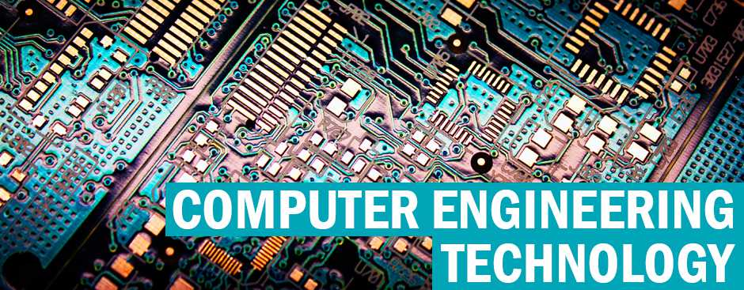

Bachelor of Science in Information Technology
About the Course:
This course introduces students to the steps necessary to analyze a problem in information technology and identify and define the computing requirements appropriate to its solution, with a focus on how to design, implement, and evaluate a computer-based system, process, component, or program to meet desired needs. Students learn to analyze the local and global impact of computing on individuals, organizations, and society. This course leads students to recognize the need for continuing professional development and imparts an understanding of professional, ethical, legal, security and social issues, and responsibilities in information technology. Students write and present, building their ability to communicate effectively with a range of audiences, and work in teams learning to function effectively together to accomplish a common goal.
Career Opportunities:
Bachelor of Science in Computer Engineering

About the Course:
Students will learn the fundamental tools in engineering and applications of science and mathematics by which the capabilities of computer hardware and software are made useful. The students will also be exposed to the different systematic and quantifiable approaches to a cost-effective requirements analysis, design, implementation, testing, operation and maintenance of high quality computing systems and networks. Moreover, students will specialize in the study in engineering mathematics, circuit design, computer architecture and organization, operating systems, database systems, computer networks and fault-tolerant computing.
Career Opportunities: